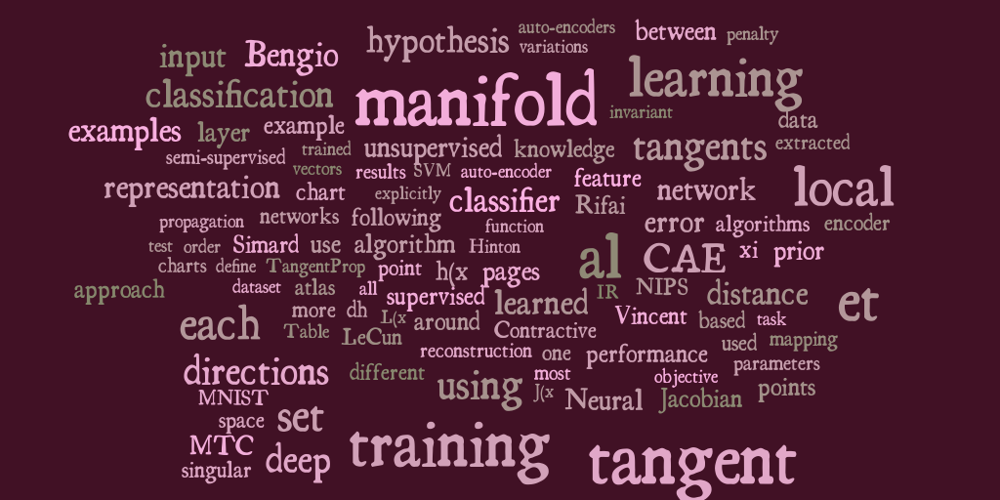

Hi! I'm Yann N. Dauphin.
I'm a computer engineer and a machine learning researcher. I'm currently pursuing a Ph.D. at U. of Montréal on deep learning algorithms for large-scale problems.
Email:
Curriculum Vitae: PDF
Publications
Here are some my research publications in peer-reviewed conferences and journals:
S. Rifai, Y. Bengio, Y. Dauphin, P. Vincent. A Generative Process for Sampling Contractive Auto-Encoders. In Proceedings of the 29th International Conference on Machine Learning (ICML 2012).
S. Rifai, Y. Dauphin, P. Vincent, Y. Bengio, X. Muller. The Manifold Tangent Classifier. In Advances in Neural Information Processing Systems (NIPS 2011). Best student paper award: Honorable mention.
Y. Dauphin, X. Glorot, Y. Bengio. Large-Scale Learning of Embeddings with Reconstruction Sampling. In Proceedings of the 28th International Conference on Machine Learning (ICML 2011).
S. Rifai, G. Mesnil, P. Vincent, X. Muller, Y. Bengio, Y. Dauphin, X. Glorot. Higher Order Contractive Auto-Encoder. In Proceedings of the European Conference on Machine Learning (ECML 2011).
G. Mesnil, Y. Dauphin, X. Glorot, S. Rifai, Y. Bengio, et al. Unsupervised and Transfer Learning Challenge: a Deep Learning approach. In Journal of Machine Learning Workshop and Conference Papers (JMLR W&CP 2011).
Talks
Large-scale Learning of Embeddings with Reconstruction Sampling
At the International Conference on Machine Learning (ICML) 2011.
Work Experience
Here are some of my work experiences (check my CV for the full list):
Deep Speech Recognition at Google
Tags: Deep Neural Networks, Speech
I was hired as an intern in the summer of 2012 to do research on deep learning algorithms for Automatic Speech Recognition (ASR). This is for an application that is deployed on every Android phone: Voice Search.
- I implemented and developed new deep learning algorithms that scaled to billions of examples.

Machine Learning for a Web Application
Tags: LAMP, Neural Networks
I was hired as an Analyst/Programmer at Verkko Stadi during the summer of 2007. Initially I worked on their dating site, Ittakes2.com. I was later promoted to the creation of a visual pattern matcher.
- I presented a production-ready solution.
- The system's core is a Convolutional Neural Network.
Open Source
Here are some my open source contributions (check my CV for the full list):

Compiler construction
Tags: JIT compilation, Common Lisp
In 2007, I started working on a Just-in-Time (JIT) compiler for the open source CLisp Virtual Machine. I started development on my own because I wanted to make CLisp faster. I am now an official member of the CLisp team.
Started in the autumn of 2007. Development is ongoing.
Musings
Genetic programming
Tags: Algorithms, Image processing, Creativity
I was amazed by a post written by Roger Alsing. He made an algorithm that could reproduce images using a limited amount of semi-transparent polygons. I wanted to make my own.
- On the left is a video someone made of my algorithm evolving the Mona Lisa.
- My project was added to the popular JGap Genetic Algorithm library as an example.
- I started by a prototype using Numpy. It didn't converge.
- I re-implemented it in Java. It worked well.
- I gradually improved and added genetic operators based on my analysis of the problem.
- I re-implemented the algorithm to use genetic programming.
- I read other people's take on the problem.
- I re-implemented it in Clojure as the evolution of lambdas and blogged about it.